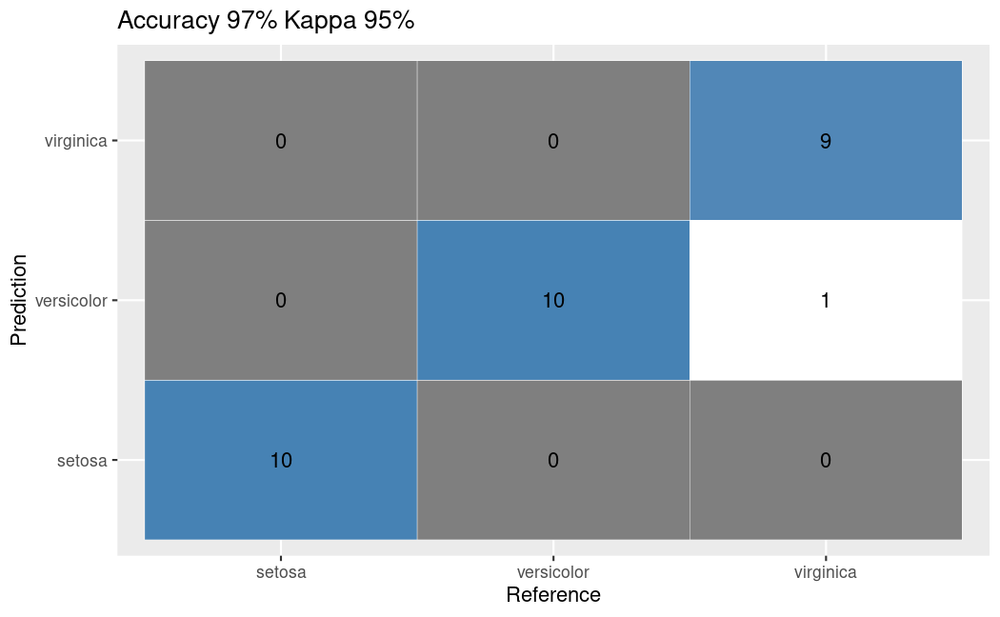

library(e1071)
library(caTools)
library(ggplot2)
library(scales)
library(caret)
Confusion Matrix
The R package caret includes the confusionMatrix function, which provides a comprehensive output.
Classification
We will perform a Naïve Bayes classification on the classical iris dataset.
iris$spl = caTools::sample.split(iris, SplitRatio = 0.8)
train <- subset(iris, iris$spl == TRUE)
test <- subset(iris, iris$spl == FALSE)
iris.nb <- naiveBayes(Species ~ ., data = train)
nb_train_predict <-
predict(iris.nb, test[, names(test) != "Species"])
cfm <- confusionMatrix(nb_train_predict, test$Species)
cfmConfusion Matrix and Statistics
Reference
Prediction setosa versicolor virginica
setosa 10 0 0
versicolor 0 10 1
virginica 0 0 9
Overall Statistics
Accuracy : 0.9667
95% CI : (0.8278, 0.9992)
No Information Rate : 0.3333
P-Value [Acc > NIR] : 2.963e-13
Kappa : 0.95
Mcnemar's Test P-Value : NA
Statistics by Class:
Class: setosa Class: versicolor Class: virginica
Sensitivity 1.0000 1.0000 0.9000
Specificity 1.0000 0.9500 1.0000
Pos Pred Value 1.0000 0.9091 1.0000
Neg Pred Value 1.0000 1.0000 0.9524
Prevalence 0.3333 0.3333 0.3333
Detection Rate 0.3333 0.3333 0.3000
Detection Prevalence 0.3333 0.3667 0.3000
Balanced Accuracy 1.0000 0.9750 0.9500Plotting
To plot the obtained confusion matrix as a ggplot graphic, we will use the following function:
ggplotConfusionMatrix <- function(m){
mytitle <- paste("Accuracy", percent_format()(m$overall[1]),
"Kappa", percent_format()(m$overall[2]))
p <-
ggplot(data = as.data.frame(m$table) ,
aes(x = Reference, y = Prediction)) +
geom_tile(aes(fill = log(Freq)), colour = "white") +
scale_fill_gradient(low = "white", high = "steelblue") +
geom_text(aes(x = Reference, y = Prediction, label = Freq)) +
theme(legend.position = "none") +
ggtitle(mytitle)
return(p)
}